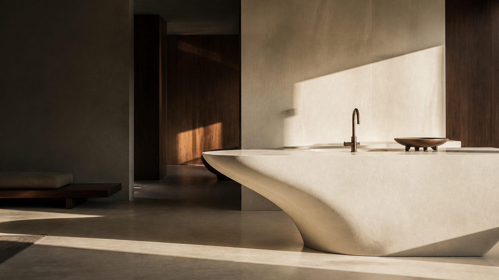
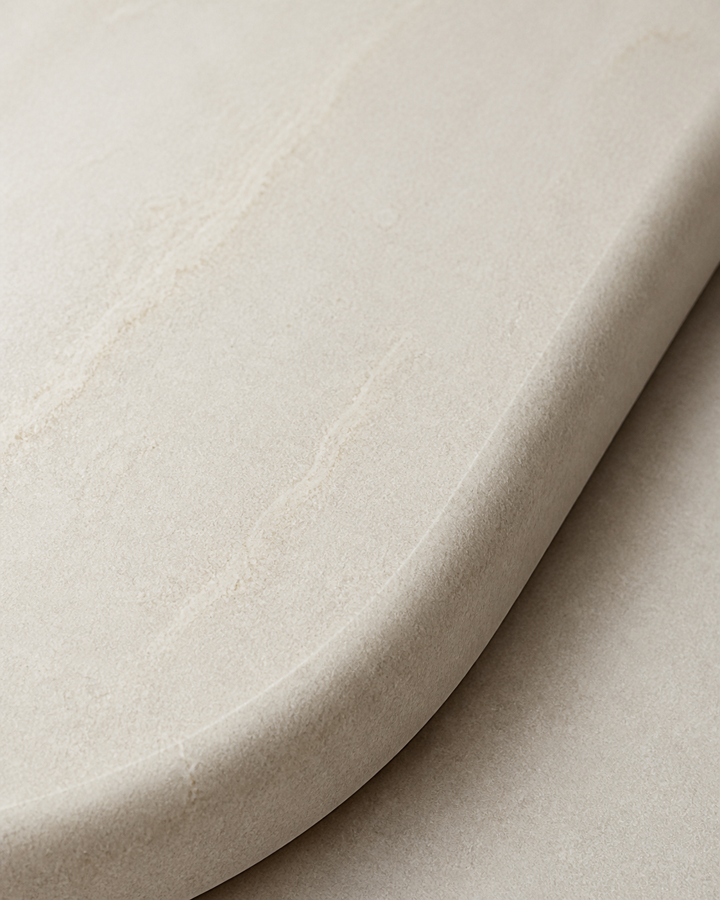

Material knowledge / 06 min read

Architectural materials / fabrication / India
Material,
made architectural.
Surfaces and forms with the quiet confidence to shape a room.
0104
Scroll to explore
01 / The practice
We bring material
into focus.
Ace Spaces is a material and fabrication practice for architects, designers and people who care about how a space is made.
From the first sample to the final edge, we work with surfaces as a design medium — precise, tactile and made to belong.
About Ace Spaces ↗Material library
Collections for
considered spaces.
The Ace Spaces approach
Good material is felt
before it is named.
Material / form / detailUnderstand our materials ↘

02 / From sheet to space
Made for the
way you imagine.
We shape solid surfaces into seamless, sculptural and deeply considered architectural elements — with craft at every scale.
01Cut
02Join
03Form
04Finish
Selected work
Spaces with
something to say.
Residential / Bengaluru
01 / Private residence
A quieter kind
of luxury.
A continuous mineral surface moves from island to wall, letting the architecture speak in one measured gesture.
View case study ↗03 / Applications
One material.
Many lives.
From the intimacy of a vanity to the energy of a hospitality space, we help materials find their right expression.
CC
The wider ecosystem
Beyond
the surface.
Coro Collective is our sister brand for interiors and spatial design — complete environments, thoughtfully composed.
Explore Coro Collective ↗From the journal
Notes on making
space matter.
The edge is where
Read article ↗Fabrication / 04 min read
On the beauty of
the seamless join.
Read article ↗Start a conversation
Have a space
in mind?
Tell us what you are imagining. We will bring the right material perspective.
Start a project ↗01
Material consultation
Fabrication
Project support
Material consultation
Fabrication
Project support